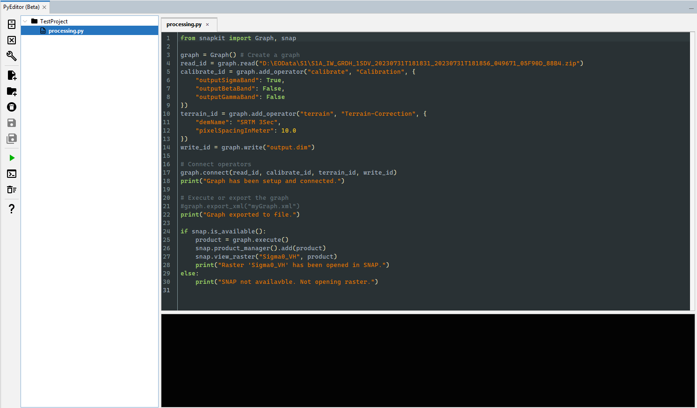
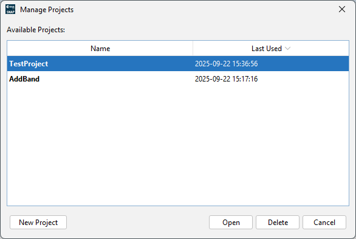
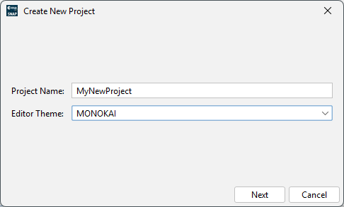
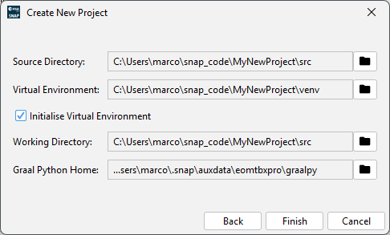
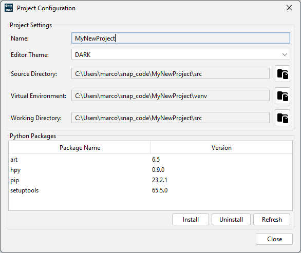
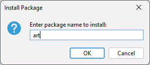
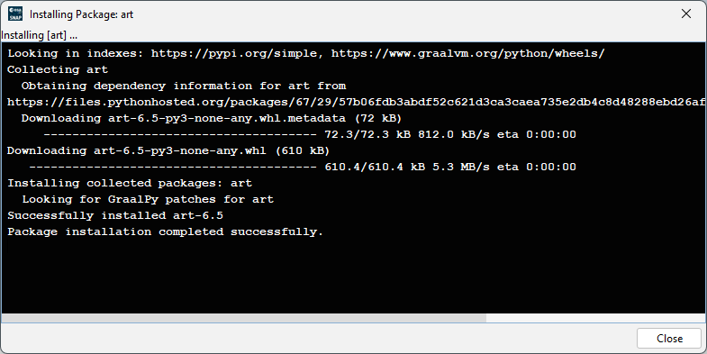
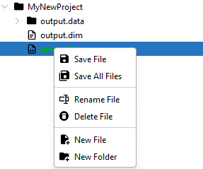
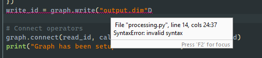

|
|
EOMasters Toolbox | |
The editor consists of a toolbar on the left, an editing area on the right, and in between the project file tree. Below the editing a console area is opened when a script is executed.

Open and Manage Projects - This opens a new dialog where you can open or create new projects.
Close Project - Simply closes the current project.
Configure Project - This opens a dialog where you can configure the project.
Add File - Allows adding a new file to the project.
Add Directory - Allows adding a new directory to the project.
Delete - Deletes the selected file or directory.
Save File - Saves the selected file.
Save All - Saves all modified files in the project.
/ Execute/Stop - Executes the selected script.
Toggle Console Visibility - Opens or closes the console.
Clean Console - Clears the console.
Help - Opens the help page.

In the Manage Projects dialogue your projects are listed, and you can open and delete them. Also, you can create new projects.


(1) First, you can set the project name and select the theme for the editor.
(2) On the next page the directories used for the sources and the virtual environment are displayed and can be modified. When using an exising virtual environment, the initialisation of the environment can be disabled. By default, the working directory used by the project is the source directory. The Graal Python home directory can be selected. It is initialised by default with the home set in the options.

Here some information about the project is displayed, and you can change the editor theme. To display the installed Python packages, you need to refresh the table first.
You can install new packages.


For the installation process of a package, the Python pip tool is used. The entered package name is passed to the pip
install option. This means that you can also specify versions e.g., as numpy==2.0.2
The project tree displays the files in the source directory. Opened files are rendered bold, and if a file has been edited in the editor area, it is marked green. A context menu with access to file operations can be opened.

The editing area supports several themes which you can select in the project configuration. Python files are parsed automatically and syntax errors are highlighted.

The following shortcuts are available:
| Action | Behavior | Windows Shortcut | Mac Shortcut |
|---|---|---|---|
| Save File | Saves the file currently active | CTRL + S |
CMD + S |
| Save All Files | Saves all modified files | CTRL + SHIFT + S |
CMD + SHIFT + S |
| Decrease Indent | Decreases the indentation of the selected lines | SHIFT + TAB |
SHIFT + TAB |
| Collapse Code Block | Collapses the current code block | CTRL + - (NUMPAD) |
CMD + - (NUMPAD) |
| Expand Code Block | Expands the current code block | CTRL + + (NUMPAD) |
CMD + + (NUMPAD) |
| Collapse All Folds | Collapses all folds in the editor | CTRL + / (NUMPAD) |
CMD + / (NUMPAD) |
| Expand All Folds | Expands all folds in the editor | CTRL + * (NUMPAD) |
CMD + * (NUMPAD) |
| Start of Line | Go to the start of the current line | HOME |
CMD + LEFT |
| Select to Start of Line | Select to the start of the current line | SHIFT + HOME |
CMD + SHIFT + LEFT |
| End of Line | Go to the end of the current line | END |
CMD + RIGHT |
| Select to End of Line | Select to the end of the current line | SHIFT + END |
CMD + SHIFT + RIGHT |
| Top of Editor | Go to the top of the editor | CTRL + HOME |
CMD + HOME |
| Select to Top of Editor | Select to the top of the editor | CTRL + SHIFT + HOME |
CMD + SHIFT + HOME |
| End of Editor | Go to the end of the editor | CTRL + END |
CMD + END |
| Select to End of Editor | Select to the end of the editor | CTRL + SHIFT + END |
CMD + SHIFT + END |
| Move Lines Down | Move the selected lines down | ALT + DOWN |
ALT + DOWN |
| Move Lines Up | Move the selected lines up | ALT + UP |
ALT + UP |
| Cut | Cuts selected text | CTRL + X |
CMD + X |
| Copy | Copies selected text | CTRL + C |
CMD + C |
| Paste | Pastes selected text | CTRL + V |
CMD + V |
| Paste Clipboard | Displays a popup of recent pasted values | CTRL + SHIFT + V |
CMD + SHIFT + V |
| Toggle Mode | Toggles between insert and overwrite mode | INSERT |
INSERT |
| Delete Line | Deletes the current or selected lines | CTRL + D |
CMD + D |
| Join Line | Concatenates the current line with the next | CTRL + J |
CMD + J |
| Complete Word | Completes the current word | CTRL + ENTER |
CMD + ENTER |
| Undo | Undoes the last action | CTRL + Z |
CMD + Z |
| Redo | Redoes the last action | CTRL + Y |
CMD + Y |